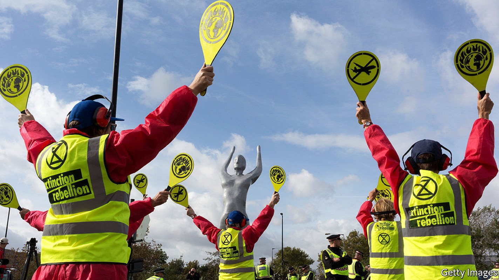
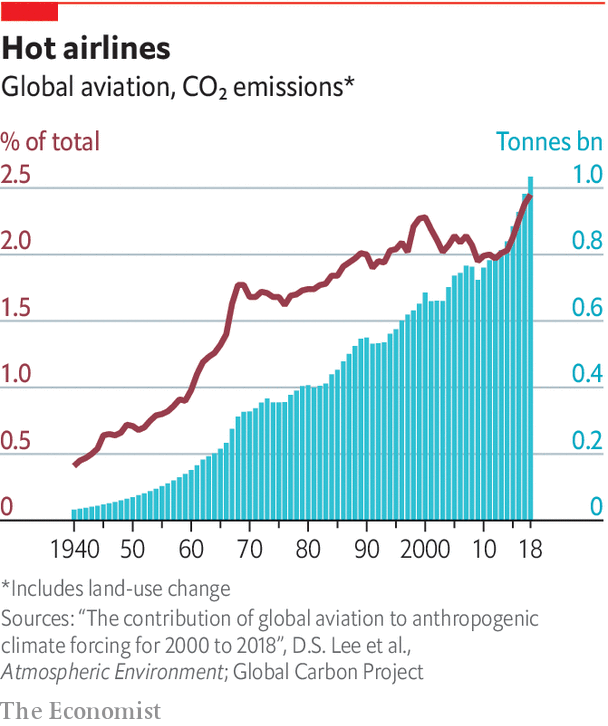

The pandemic has drawn attention to the environmental damage caused by air travel

SKIES CLEARED of much commercial aviation gave plenty of ammunition to those who see air-travel emissions as one of the gravest threats to the environment. Travel by commercial jet attracts more criticism than its 2-3% share of global carbon emissions seems to justify. Yet despite this seemingly modest contribution it is (or was, until covid-19 struck) one of the fastest-growing sources, the worst contributor of all emissions per kilometre travelled of transport and is likely to continue on its upward path. The growing ease and falling cost of travel, plus a lack of any regulations to curb emissions, means that unchecked a rise to as much as 9% of total carbon emissions by 2050 has looked plausible.
Listen to this story.Enjoy more audio and podcasts on iOS or Android.
Listen to this story
Save time by listening to our audio articles as you multitask
As far back as 2009 the airline industry pledged to cut emissions from flying by half from levels in 2005 by 2050. More recently flygskam (flight shame), a Swedish word that sums up a growing worry about the environmental impact of flying, protest groups such as Extinction Rebellion, whose followers have blockaded airports, and other anti-flying movements have all reminded the airline industry that for too long it has got away with failing to tackle the growth in carbon emissions.
The industry has adeptly managed to sidestep regulation. Aviation fuel is exempt from taxes on international flights, thanks to the Chicago convention, still the main rulebook for the industry even though it was agreed in 1944. In 2013 the EU tried to add international flights to its emissions-trading system, but the industry successfully resisted. As a compromise the International Civil Aviation Organisation, a UN agency, came up with CORSIA, a global scheme to offset emissions. Although criticised for its toothlessness—it is voluntary until 2027 and does not include domestic flights—CORSIA starts its pilot phase this year.

Yet carbon emissions per passenger have fallen by over 50% since 1990. New technology serving the commercial interests of airlines (fuel typically accounts for 15-20% of airlines’ operating costs) has had the side-effect of lowering emissions. Every generation of aircraft, such as the newest short-haul planes from Airbus and Boeing, is typically 15-20% more fuel-efficient than the one it replaces, mostly because of improvements in engines. Other bits of kit have helped. Airbus’s “sharklets” or Boeing’s “winglets”, the specialised wingtip additions on new planes, have improved fuel efficiency by 3-4%. Better business models, such as low-cost carriers that pack in more passengers, have ensured that aircraft are flying around with more people on board. Average load factors have improved by some ten percentage points over the past 15 years to 83% in 2019—though that was pre-covid.
Emissions per passenger will fall further in the next few years, if only because flying is unlikely to return to levels of 2019 for three or four years. Cleaner skies will result from the early retirement of older, less efficient planes as airlines cut capacity. The oldest, most inefficient models such as the Boeing 747 jumbo jet and the Airbus A340 may stay on the ground for good. Other older planes will be retired earlier and replaced with more efficient models.
Rail v air
The pandemic might even see some shift to rail, especially in Europe where trains and planes compete on international routes and an established high-speed network can be expanded. China’s domestic market could see similar competition between rail and jet engine. UBS, a bank, reckons that the use of high-speed trains could lead to zero growth in air traffic between European destinations from 2018 to 2028. Governments should be keen to invest in high-speed rail in Europe given their commitments to net-zero-carbon emissions by 2050. Further liberalisation across the EU will expose state-run incumbents to more competition.
Yet rail can never compete with airlines on long-haul routes that traverse large stretches of water. So a bigger leap to net-zero emissions from aviation has come to the fore. Airbus and Boeing, the duopoly atop the aircraft supply chain, have been clobbered by big losses, production cuts and fears for the financial health of their suppliers and their customers. Boeing’s woes have been compounded by the damage from the grounding of the 737MAX for almost two years after two fatal crashes. The plane was eventually recertified for a return to service by American regulators in November. Yet the pair will continue to sell planes and these will largely replace older ones rather than expand fleets. So the share of newer, cleaner planes in the world’s fleets will grow.
Airbus and Boeing have gone further, with plans for aviation to clean up its act more comprehensively. The European firm hopes to have net-zero-emission planes that can ply short-haul routes in commercial service by 2035. The three concept aircraft it has unveiled, including a futuristic “blended wing” design, use hydrogen as a fuel. In January Boeing said that by 2030 it will start delivering commercial planes powered entirely by biofuels, another way to cut emissions. These are already in use in limited quantities by several airlines, blended with regular fuel, but are still prohibitively expensive—perhaps twice the price of kerosene.
Scale should bring prices down. And turning plant matter and waste into fuel has a carbon footprint of its own. Rolls-Royce, a jet-engine maker, nevertheless reckons a 75% reduction of carbon emissions is possible, with more to come. Other zero-emissions technologies are in development. Startups have been testing small battery-powered planes. Eviation, an Israeli firm, hopes that Alice, capable of flying nine passengers up to 800km, will fly for the first time next year. Others, such as ZeroAvia, are trying out fuel cells that use hydrogen to generate electricity to power engines.
Airbus expects its new plane to be powered by hydrogen directly as a fuel in new turbofans of the sort now found in large passenger jets. Big investments will be needed, starting with engine makers that must work out how hydrogen, which burns at a far higher temperature than kerosene, can be used safely. Boeing’s plans require some adaptation of existing engines. Given that new planes can take seven or eight years to get from drawing-board to commercial service, that gives Boeing what Robert Spingarn of Credit Suisse, another bank, calls “breathing room”. Airbus is likely to launch its hydrogen programme formally in 2027. So gradually, after 2030 if the timetable holds, new planes will have far lower emissions and after 2035 short-haul jets should have net-zero emissions. The hydrogen technology could be extended to twin-aisle planes, all of which should be using more biofuels. No switch will be flicked but in around a decade the journey to clean up travel will start in earnest.■
For more coverage of climate change, register for The Climate Issue, our fortnightly newsletter, or visit our climate-change hub